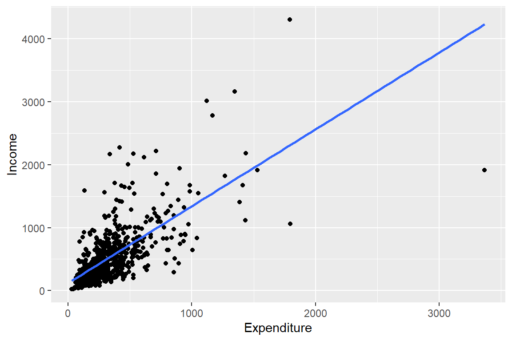
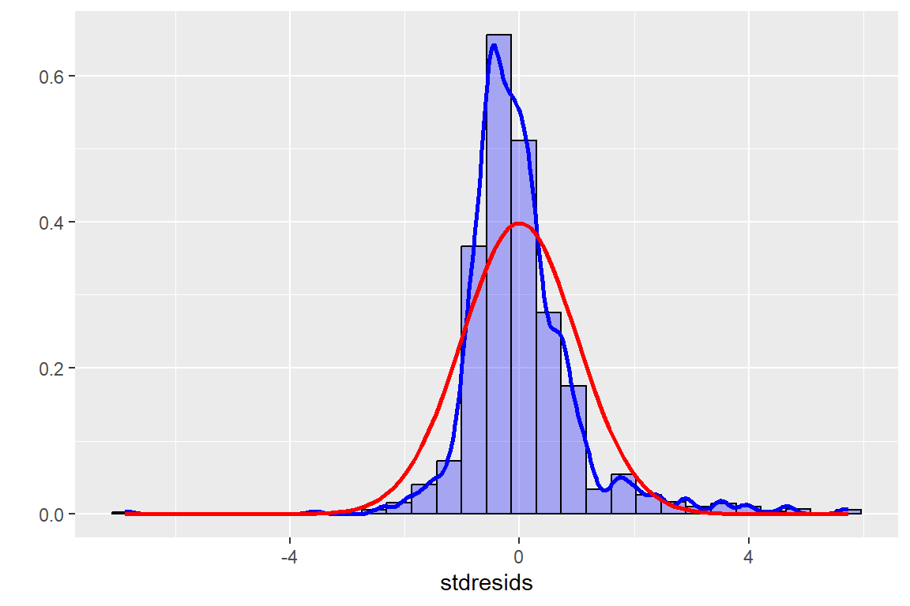
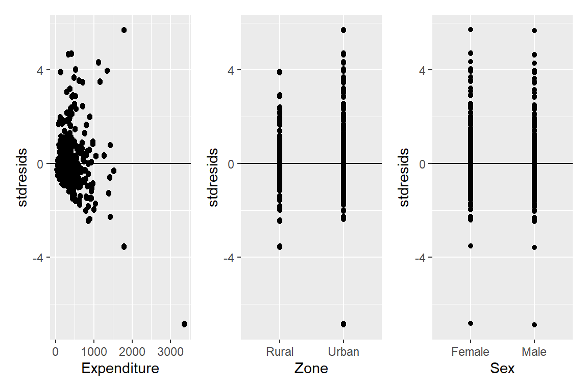
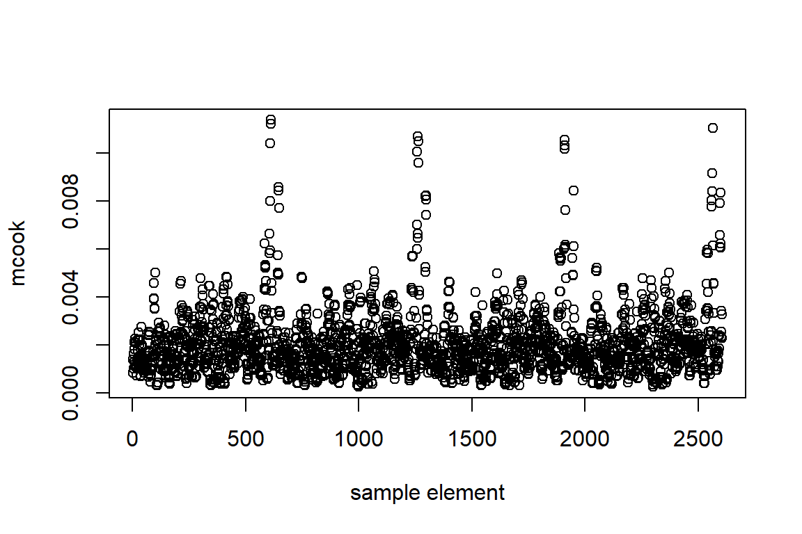
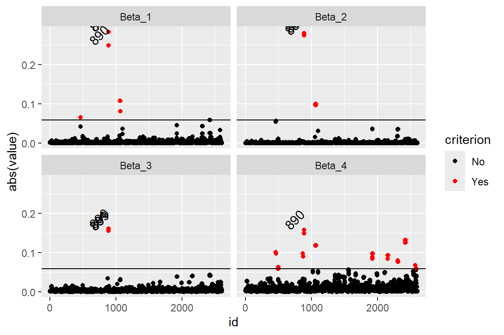
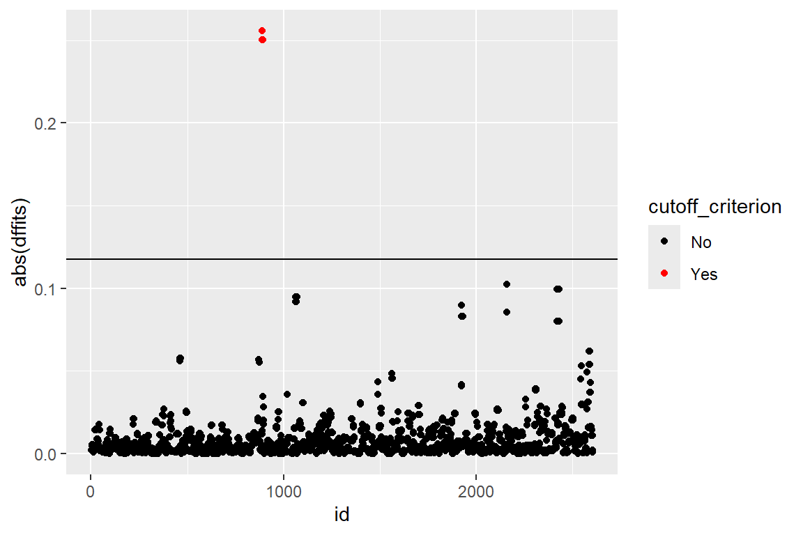
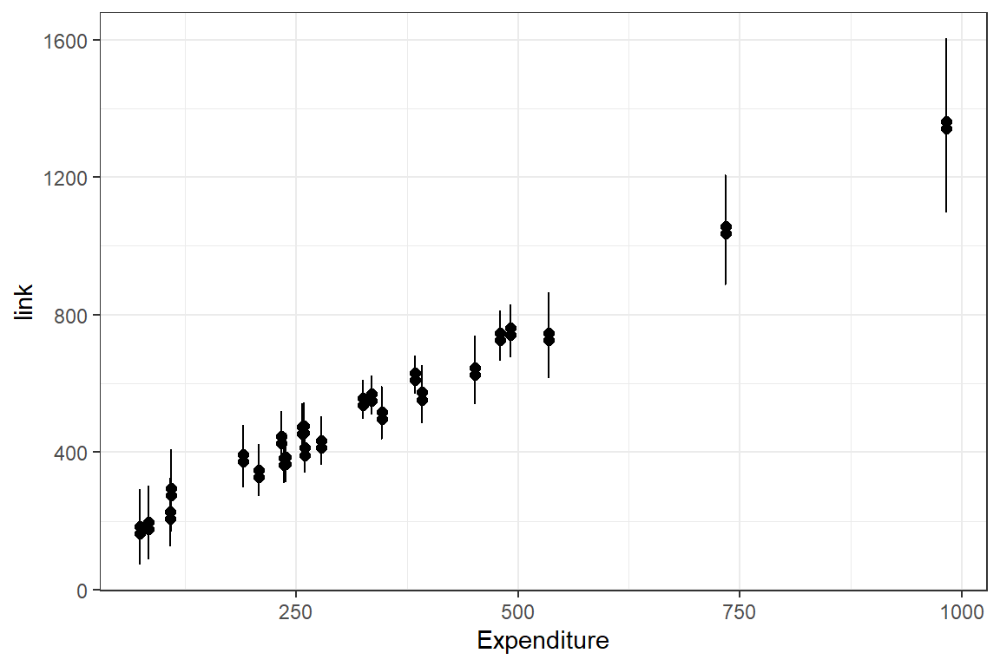

library(survey)
library(srvyr)
library(tidyverse)
data(BigCity, package = "TeachingSampling")
survey_data <- readRDS("../Data/encuesta.rds")
survey_design <- survey_data %>%
as_survey_design(
strata = Stratum,
ids = PSU,
weights = wk,
nest = TRUE
)5 Modelos de regresión
Los modelos de regresión constituyen una de las herramientas más utilizadas en el análisis de datos provenientes de encuestas, ya que permiten estudiar la relación entre una variable de interés y un conjunto de variables explicativas. A través de estos modelos, es posible evaluar cómo cambian determinadas características de la población según factores demográficos, sociales o económicos observados en la muestra. No obstante, la validez de los resultados obtenidos depende de una adecuada especificación del modelo y de la correcta consideración de las características del diseño muestral de la encuesta (Chambers y Skinner 2003; Heeringa et al. 2017).
En términos generales, los modelos de regresión buscan describir y cuantificar la asociación entre una variable respuesta (dependiente) y una o más variables explicativas (independientes), proporcionando elementos para la interpretación estadística y la formulación de inferencias sobre la población de estudio. No obstante la validez de los resultados obtenidos depende, en gran medida, de una adecuada especificación del modelo y de la correcta consideración de las características del diseño muestral de la encuesta (Chambers y Skinner 2003; Heeringa et al. 2017).
Por ejemplo, es posible analizar el comportamiento del ingreso de los hogares como variable de respuesta, en función de características como el nivel educativo alcanzado y la situación laboral de sus integrantes, consideradas variables explicativas. Utilizando información proveniente de encuestas de hogares, este tipo de modelos permite identificar patrones de asociación, cuantificar el efecto de distintos factores socioeconómicos sobre el ingreso y generar evidencia empírica útil para el diseño, seguimiento y evaluación de políticas públicas.
No obstante, dado que las encuestas de hogares están sustentadas en diseños de muestreo complejos, los métodos clásicos de regresión, desarrollados bajo supuestos de muestreo aleatorio simple, pueden resultar inapropiados. Ignorar el diseño puede sesgar los coeficientes cuando la selección es informativa o el modelo está mal especificado y, aun cuando los coeficientes no cambien de manera apreciable, puede producir errores estándar y pruebas de hipótesis incorrectos (Chambers y Skinner 2003; Pfeffermann 2011).
En consecuencia, el análisis de datos provenientes de encuestas exige una atención detallada al diseño de muestreo. La incorporación de los pesos de la encuesta y los ajustes correspondientes a la estratificación y la conglomeración permite obtener inferencias válidas y precisas. Adicionalmente, en algunos casos se han propuesto alternativas simplificadas, como el uso de pesos normalizados o enfoques de ponderación aproximada, que buscan equilibrar la complejidad metodológica con la factibilidad práctica del análisis (Heeringa et al. 2017).
El estudio de la regresión bajo diseños de muestreo complejos cuenta con una trayectoria bien documentada. Como señaló Kish y Frankel (1974) en sus primeras discusiones, estos diseños afectan las inferencias derivadas de modelos de regresión. Posteriormente, se desarrollaron estimadores de varianza apoyados en técnicas de linealización para modelos de regresión lineal múltiple con ponderación desigual y métodos específicos para diseños estratificados y de dos etapas (Fuller 1975).
Más adelante, el problema de las violaciones a los supuestos clásicos al trabajar con datos de encuestas motivó alternativas de inferencia robusta para los parámetros. En paralelo, las distribuciones muestrales de los estimadores de regresión en poblaciones finitas se incorporaron a procedimientos para estimar varianzas bajo esquemas complejos (Shah et al. 1977; Binder 1983).
En los años siguientes, estos aportes se ampliaron mediante estimadores de varianza para los coeficientes de regresión que incorporan la estratificación y la conglomeración, así como mediante compendios de métodos de estimación aplicables a modelos de regresión en encuestas complejas. La discusión reciente incluye, además, métodos de ponderación q-weighted y evidencia empírica sobre su utilidad (Skinner et al. 1989; Fuller 2002; Pfeffermann 2011).
5.1 Formulación del modelo
Los modelos de regresión bajo diseños de muestreo complejos permiten trascender las estadísticas descriptivas y estudiar asociaciones o realizar predicciones; una interpretación causal requiere, además, un diseño de identificación y supuestos causales que no se obtienen únicamente por incorporar el diseño muestral. Su correcta aplicación abre la posibilidad de examinar cómo las características sociodemográficas y económicas se asocian con distintos resultados de interés, aportando evidencia clave para la formulación de políticas públicas (Chambers y Skinner 2003; Heeringa et al. 2017).
Como punto de partida, la formulación más básica corresponde al modelo de regresión lineal simple, el cual describe la relación entre una variable respuesta y una única variable explicativa mediante la siguiente expresión (Fox y Weisberg 2019):
\[ y = \beta_{0} + \beta_{1}x + \varepsilon \]
En donde \(y\) representa la variable de respuesta (dependiente), \(x\) la variable explicativa (independiente), \(\beta_{0}\) el intercepto del modelo, \(\beta_{1}\) el coeficiente asociado a la variable independiente y \(\varepsilon\) el término de error, que recoge la variabilidad no explicada por el modelo y puede interpretarse como la diferencia entre el valor observado y el valor estimado por el modelo, denotado por \(\hat{y}_k\).
En muchas aplicaciones empíricas, y especialmente en el análisis de encuestas de hogares, el fenómeno de interés depende simultáneamente de múltiples factores. En estos casos se emplean modelos de regresión lineal múltiple, los cuales incorporan varias variables explicativas:
\[ y = \beta_{0} + \beta_{1}x_{1} + \cdots + \beta_{p}x_{p} + \varepsilon, \]
donde cada coeficiente \(\beta_{j}\) cuantifica la asociación entre la variable respuesta y la correspondiente covariable \(x_{j}\), manteniendo constantes las demás variables incluidas en el modelo. De manera más compacta, el modelo puede expresarse utilizando notación matricial como:
\[ y_{k} = \mathbf{x}_{k}\boldsymbol{\beta} + \varepsilon_{k}, \quad k=1,\ldots,n, \]
donde \(\mathbf{x}_{k} = [1, x_{1k}, \ldots, x_{pk}]\) representa el vector de covariables asociado a la unidad \(k\), mientras que \(\boldsymbol{\beta} = [\beta_{0}, \beta_{1}, \ldots, \beta_{p}]'\) corresponde al vector de parámetros desconocidos del modelo. En este contexto, el valor esperado de la variable respuesta condicionado al conjunto de covariables puede expresarse como:
\[ E(y \mid \mathbf{x}) = {\beta}_{0} + {\beta}_{1}x_{1} + \cdots + {\beta}_{p}x_{p} \]
Los modelos de regresión lineal se sustentan en una serie de supuestos teóricos que garantizan la validez de las estimaciones y de las inferencias derivadas del modelo. En primer lugar, se asume que el valor esperado de los residuos condicionado a las covariables es igual a cero, es decir, \(E(\varepsilon_{k} \mid \mathbf{x}_{k}) = 0\), lo que implica la ausencia de sesgos sistemáticos en la estimación de la variable respuesta. Asimismo, se supone homogeneidad de la varianza de los errores, de modo que la variabilidad residual permanece constante para todos los valores de las covariables, esto es, \(Var(\varepsilon_{k} \mid \mathbf{x}_{k}) = \sigma^2\). Adicionalmente, se considera que los errores siguen una distribución normal con media cero y varianza constante, expresada como \(\varepsilon_{k} \mid \mathbf{x}_{k} \sim N(0,\sigma^2)\), y que los residuos asociados a distintas observaciones son independientes entre sí, de manera que \(Cov(\varepsilon_{k},\varepsilon_{j}\mid \mathbf{x}_{k},\mathbf{x}_{j})=0\) (Fox y Weisberg 2019).
La validez de los modelos de regresión lineal depende del cumplimiento de algunos supuestos clásicos ampliamente discutidos en la literatura especializada. En conjunto, estos supuestos permiten que los estimadores obtenidos mediante el modelo posean propiedades estadísticas deseables, tales como insesgamiento, eficiencia y consistencia.
5.2 Uso de los pesos de muestreo
Cuando se trabaja con datos provenientes de encuestas basadas en diseños muestrales complejos, los supuestos clásicos de los modelos de regresión rara vez se cumplen de manera estricta, puesto que las observaciones no provienen de muestras aleatorias simples e independientes, sino de esquemas de selección que incorporan elementos como estratificación, conglomeración y probabilidades desiguales de selección. Por ejemplo, la presencia de conglomeración puede violar el supuesto de independencia de los errores, ya que individuos pertenecientes a un mismo hogar, segmento o área geográfica tienden a compartir características similares. Del mismo modo, las probabilidades desiguales de selección y los ajustes de ponderación pueden generar heterogeneidad en la varianza de las observaciones, incumpliendo el supuesto de homocedasticidad.
En este contexto, surge una pregunta fundamental: ¿de qué manera deben incorporarse los pesos muestrales en los modelos de regresión? La respuesta no es sencilla, ya que los pesos de la encuesta reflejan no solo las probabilidades de selección, sino también diversos ajustes asociados a la no respuesta, calibración y correcciones de cobertura. Aunque su utilización permite producir estimaciones representativas de la población, la incorporación directa de ponderaciones en los modelos también puede reducir la eficiencia estadística e incrementar la variabilidad de los estimadores.
En términos generales, Pfeffermann (2011) distingue dos enfoques principales para abordar este problema. El primero corresponde al enfoque basado en el diseño muestral, cuyo objetivo es obtener inferencias válidas para la población objetivo respetando las características del proceso de selección de la muestra. Desde esta perspectiva, los pesos muestrales son esenciales para corregir las probabilidades desiguales de inclusión y producir estimaciones insesgadas de los coeficientes de regresión. Sin embargo, este enfoque no protege frente a posibles errores de especificación del modelo; es decir, aun cuando las estimaciones sean válidas desde el punto de vista del diseño, el modelo puede no representar adecuadamente las relaciones existentes en la población (Heeringa et al. 2017).
El segundo corresponde al enfoque orientado al modelo, según el cual los pesos no son necesariamente requeridos siempre que el modelo esté correctamente especificado y el mecanismo de muestreo sea no informativo. Bajo este supuesto, las relaciones entre las variables observadas en la muestra coinciden con las de la población, de manera que el diseño muestral no introduce sesgos relevantes en la estimación de los parámetros. Desde esta perspectiva, incorporar ponderaciones podría incluso resultar contraproducente, al aumentar innecesariamente la varianza de los estimadores y, en consecuencia, los errores estándar.
La discusión sobre la conveniencia de utilizar ponderaciones en modelos de regresión ha sido ampliamente desarrollada en la literatura especializada. En la práctica, una recomendación metodológica frecuente consiste en estimar los modelos tanto con ponderaciones como sin ellas y comparar posteriormente los resultados obtenidos. Si la inclusión de los pesos produce cambios importantes en los coeficientes estimados o modifica las conclusiones sustantivas del análisis, ello sugiere que el diseño de muestreo es informativo o que el modelo presenta problemas de especificación, por lo que el uso de ponderaciones resulta aconsejable. Por el contrario, si los coeficientes permanecen relativamente estables y las ponderaciones únicamente incrementan los errores estándar, puede considerarse que el modelo captura adecuadamente la estructura de los datos y que el uso de pesos no es estrictamente necesario (Skinner et al. 1989; Pfeffermann 2011; Naciones Unidas 2026).
En términos aplicados, esta decisión suele depender del propósito analítico del estudio. Cuando el objetivo es realizar inferencia descriptiva y producir estimaciones representativas de la población, la utilización de ponderaciones es indispensable. En cambio, en contextos de inferencia analítica orientados al estudio de asociaciones, relaciones causales o contrastes de hipótesis, pueden emplearse tanto modelos ponderados como no ponderados, especialmente cuando el modelo incorpora variables relacionadas con el diseño muestral, como estratos o conglomerados. No obstante, el uso de modelos no ponderados debe justificarse cuidadosamente, dado que implica asumir condiciones más restrictivas sobre el mecanismo de selección de la muestra y la correcta especificación del modelo estadístico.
En resumen, cuando se opta por ponderar, las ponderaciones corrigen posibles sesgos de sobre o subrepresentación de determinados grupos y contribuyen a obtener estimaciones de varianza más exactas. Dentro del enfoque basado en el diseño, esto permite que los resultados se aproximen a valores insesgados comparables a los que se obtendrían en un censo completo, incluso cuando el modelo no esté formulado de manera óptima. Sin embargo, cuando los pesos presentan gran dispersión, pueden aumentar la varianza de los parámetros estimados y volver inestables las estimaciones, razón por la que en contextos explicativos o analíticos los modelos sin ponderar pueden, en ocasiones, arrojar resultados más consistentes y eficientes.
En cualquier caso, si el modelo se encuentra mal especificado, ignorar las ponderaciones muestrales puede conducir a estimaciones sesgadas, poco informativas o incluso carentes de validez inferencial. Por esta razón, la selección adecuada de las variables incluidas en el modelo constituye un aspecto fundamental del análisis. Con el fin de abordar estas problemáticas, se han propuesto diversas estrategias de ajuste orientadas a lograr un equilibrio entre ambos objetivos. Entre los procedimientos más utilizados se destacan los siguientes:
Pesos tipo Senado: este procedimiento ajusta los pesos de manera que su suma coincida con el tamaño de la muestra, en lugar del tamaño de la población. Esta transformación multiplica todos los pesos por una constante y conserva su dispersión relativa; por tanto, no constituye un recorte de pesos extremos. Las nuevas ponderaciones son \(w_k^{Senate} = w_k \times \frac{n}{\sum w_k}\) (Pfeffermann 2011; Heeringa et al. 2017).
Pesos normalizados: en este enfoque los pesos originales se reescalan para que su suma sea igual a uno. Al ser también una multiplicación por una constante común, el reescalamiento no reduce por sí mismo la variabilidad relativa de los pesos ni sustituye la especificación del diseño; su efecto sobre las varianzas depende del método y del software utilizados. Las nuevas ponderaciones son \(w_k^{Normalized} = \frac{w_k}{\sum w_k}\).
Es importante destacar que, en ambos métodos, los pesos ajustados se obtienen mediante transformaciones multiplicativas directas de los pesos muestrales originales. Por ello, no deben emplearse para calcular tamaños o totales poblacionales. Asimismo, estos procedimientos no alteran las estimaciones de razones, como medias o proporciones, ya que en tales casos los pesos se cancelan en el cociente. En la práctica, el uso de estos ajustes puede considerarse una solución pragmática en contextos donde no se dispone de software especializado para encuestas. No obstante, cuando se cuenta con herramientas como los paquetes survey y srvyr en R, descritos en los capítulos anteriores, el reescalamiento deja de ser necesario, pues dichos paquetes realizan el tratamiento adecuado para preservar tanto la representatividad como las propiedades inferenciales del modelo.
5.3 Estimación de los parámetros del modelo
En términos del ajuste de modelos de regresión con encuestas de hogares, se han desarrollado metodologías inferenciales avanzadas que integran las fuentes de incertidumbre en un mismo marco analítico, buscando reflejar tanto la estructura del diseño como los supuestos y limitaciones del modelo. Entre las aproximaciones más relevantes se encuentran la pseudo-verosimilitud y la inferencia combinada (Molina y Skinner 1992; Binder 2011).
El método de pseudo-verosimilitud extiende las técnicas tradicionales de máxima verosimilitud para ajustarlas a las particularidades de los diseños muestrales complejos. En este enfoque, la distribución de muestreo definida por el diseño ocupa un rol central, mientras que la distribución del modelo pasa a un segundo plano. Si bien en contextos de modelos bien especificados los estimadores basados en pseudo-verosimilitud tienden a ser insesgados o consistentes, su principal virtud radica en evitar los sesgos que se originarían al ignorar el diseño muestral. En términos prácticos, este método traduce el modelo tradicional en uno que respeta la forma en que los datos fueron obtenidos, garantizando inferencias más sólidas.
En contraste, la inferencia combinada propone un marco unificado en el que se integran simultáneamente la variabilidad del muestreo y la incertidumbre del modelo. Considerar ambas fuentes permite caracterizar de manera más completa la variabilidad total, pero no garantiza automáticamente estimaciones más precisas ni elimina todo sesgo; esas propiedades dependen del diseño y de la especificación del modelo. De este modo, la inferencia combinada resulta especialmente útil en aplicaciones donde se requiere equilibrar representatividad poblacional y solidez estadística de los modelos ajustados (Binder 2011).
Cuando se desea estimar los parámetros de un modelo de regresión lineal a partir de una muestra con un diseño complejo, el enfoque estándar cambia. En consecuencia, los estimadores tradicionales, como los obtenidos por máxima verosimilitud o mínimos cuadrados, pueden resultar sesgados y producir errores estándar poco confiables. Frente a esta situación, los métodos de estimación de varianza, como la linealización de Taylor y el bootstrap, son válidos en la medida en que su implementación reproduzca las características pertinentes del diseño (Wolter 2007).
En el caso de un modelo de regresión lineal simple, la estimación de \(\beta_1\) bajo un esquema de muestreo complejo se realiza, mediante un estimador ponderado, que puede expresarse de la siguiente forma (Fuller 2002; Chambers y Skinner 2003):
\[ \hat{\beta_{1}} = \frac{\sum_{h} \sum_{i} \sum_{k} w_{hik}\,(y_{hik}-\hat{\bar{y}})(x_{hik}-\hat{\bar{x}})} {\sum_{h} \sum_{i} \sum_{k} w_{hik}\,(x_{hik}-\hat{\bar{x}})^{2}} = \frac{\hat{t}_{xy}}{\hat{t}_{xx}} \]
En donde \(\hat{\bar{y}}=\hat{t}_y/\hat{N}\) y \(\hat{\bar{x}}=\hat{t}_x/\hat{N}\) corresponden a las medias estimadas de las variables de estudio y auxiliar, respectivamente, mientras que \(w_{hik}\) representa los pesos de muestreo asociados a cada unidad de observación. Esta formulación incorpora explícitamente dichos pesos, lo que permite considerar las probabilidades desiguales de selección y las características propias del diseño muestral. Asimismo, la varianza estimada de \(\hat{\beta}_1\) puede aproximarse como:
\[ \widehat{Var}\left(\hat{\beta_{1}}\right) \approx \frac{\widehat{Var}(\hat{t}_{xy})+\hat{\beta}_{1}^{2}\widehat{Var}(\hat{t}_{xx})-2\hat{\beta}_{1}\widehat{Cov}(\hat{t}_{xy},\hat{t}_{xx})}{(\hat{t}_{xx})^{2}} \]
Si \(\hat{\beta}_{1}\) corresponde al estimador de la pendiente en un modelo de regresión lineal simple ponderado, entonces el estimador del intercepto \(\hat{\beta}_{0}\) está dado por
\[ \hat{\beta}_{0} = \hat{\bar{y}} - \hat{\beta}_{1}\hat{\bar{x}} \]
Nótese que la varianza de \(\hat{\beta}_{0}\) depende simultáneamente de los estimadores \(\hat{\bar{y}}\), \(\hat{\bar{x}}\) y \(\hat{\beta}_{1}\). Por esta razón, su aproximación puede obtenerse mediante las propiedades de la varianza de combinaciones lineales de estimadores, en conjunto con técnicas de linearización de Taylor. A partir de este procedimiento se deriva la matriz de varianzas y covarianzas de los coeficientes del modelo, de la cual se obtienen tanto los errores estándar como las covarianzas asociadas a las estimaciones de los parámetros.
En el caso de la regresión múltiple, si \(\hat{\boldsymbol{\beta}}\) representa el estimador de \(\boldsymbol{\beta}\), entonces la varianza de cada coeficiente se estima considerando su interdependencia con los demás parámetros, lo que se refleja en la construcción de una matriz de varianzas-covarianzas que recoge tanto la variabilidad individual como las covarianzas entre todos los estimadores. Este cálculo requiere utilizar totales ponderados de cuadrados y productos cruzados de todas las combinaciones entre la variable dependiente \(y\) y el conjunto de predictores \(\mathbf{x} = (1, x_1, \ldots, x_p)\). En términos generales (Kish y Frankel 1974):
\[ \widehat{Var}(\hat{\boldsymbol{\beta}}) = \hat{\boldsymbol\Sigma} = \begin{bmatrix} \widehat{Var}(\hat{\beta}_{0}) & \widehat{Cov}(\hat{\beta}_{0},\hat{\beta}_{1}) & \cdots & \widehat{Cov}(\hat{\beta}_{0},\hat{\beta}_{p}) \\ \widehat{Cov}(\hat{\beta}_{0},\hat{\beta}_{1}) & \widehat{Var}(\hat{\beta}_{1}) & \cdots & \widehat{Cov}(\hat{\beta}_{1},\hat{\beta}_{p}) \\ \vdots & \vdots & \ddots & \vdots \\ \widehat{Cov}(\hat{\beta}_{0},\hat{\beta}_{p}) & \widehat{Cov}(\hat{\beta}_{1},\hat{\beta}_{p}) & \cdots & \widehat{Var}(\hat{\beta}_{p}) \end{bmatrix} \]
En este capítulo se mostrará cómo implementar estos modelos en R mediante las librerías survey y srvyr, junto con tidyverse para organizar el flujo de trabajo. Se abordará la especificación del diseño muestral, la estimación de modelos lineales y logísticos, así como la obtención de errores estándar y pruebas de hipótesis ajustadas al diseño, integrando los fundamentos teóricos con ejemplos prácticos reproducibles. Para ejemplificar los conceptos desarrollados hasta este punto, se empleará la misma base de datos utilizada a lo largo del libro. El proceso inicia con la carga de las librerías, los datos y la definición del diseño de muestreo:
En los ejemplos desarrollados a lo largo de este capítulo se emplearán los mismos subgrupos considerados en los capítulos anteriores.
urban_subset <- survey_design %>%
filter(Zone == "Urban")
rural_subset <- survey_design %>%
filter(Zone == "Rural")
female_subset <- survey_design %>%
filter(Sex == "Female")
male_subset <- survey_design %>%
filter(Sex == "Male")Con el objetivo de ajustar un modelo de regresión entre las variables ingreso y gasto, resulta conveniente explorar previamente la relación existente entre ambas variables. Para ello, se construye un diagrama de dispersión mediante ggplot2, el cual permite evaluar visualmente la forma y la intensidad de la asociación. El resultado se presenta en la figura 5.1.
unweighted_plot <- ggplot(
data = survey_data,
aes(x = Expenditure, y = Income)
) +
geom_point() +
geom_smooth(method = "lm", se = FALSE)
unweighted_plot
Los datos muestrales conservan una relación aproximadamente lineal entre ingreso y gasto, aunque se observa una mayor dispersión en los valores correspondientes a hogares con niveles de gasto más elevados. Una vez completada la exploración gráfica de los datos, se procede al ajuste de los modelos de regresión lineal.
Para ajustar modelos incorporando los factores de expansión se usa la función svyglm de la librería survey, que permite estimar modelos lineales incorporando explícitamente las características del diseño muestral. En este caso, la expresión Income ~ Expenditure especifica que la variable Income se modela en función de la variable Expenditure; es decir, se ajusta una regresión lineal simple en la que el gasto actúa como variable explicativa del ingreso. El argumento design = survey_design indica que el modelo debe utilizar el objeto de diseño muestral previamente definido, mientras que family = stats::gaussian() especifica que se ajusta un modelo lineal con distribución normal, equivalente a una regresión lineal clásica.
fit_svy <- svyglm(
Income ~ Expenditure + Zone + Sex,
design = survey_design,
family = stats::gaussian()
)
fit_svyStratified 1 - level Cluster Sampling design (with replacement)
With (238) clusters.
Called via srvyr
Sampling variables:
- ids: PSU
- strata: Stratum
- weights: wk
Call: svyglm(formula = Income ~ Expenditure + Zone + Sex, design = survey_design,
family = stats::gaussian())
Coefficients:
(Intercept) Expenditure ZoneUrban SexMale
73.58 1.22 66.65 20.64
Degrees of Freedom: 2604 Total (i.e. Null); 116 Residual
Null Deviance: 635000000
Residual Deviance: 309000000 AIC: 38300La salida anterior corresponde al ajuste de un modelo de regresión lineal en el que la variable Income se explica a partir de las variables Expenditure, Zone y Sex. Los resultados indican la existencia de una relación positiva entre ingreso y gasto, de modo que, manteniendo constantes las demás variables, el ingreso esperado aumenta en aproximadamente 1.22 unidades por cada unidad adicional de gasto.
Asimismo, se evidencian diferencias sistemáticas asociadas a las características sociodemográficas incluidas en el modelo: residir en zona urbana se asocia con un incremento promedio de 66.65 unidades en el ingreso respecto de la categoría de referencia, mientras que ser hombre se asocia con un aumento de 20.64 unidades en comparación con la categoría base del sexo. El intercepto estimado, igual a 73.58, representa el nivel esperado de ingreso para la categoría de referencia del modelo (zona rural y sexo femenino) cuando el gasto es igual a cero.
5.4 Diagnóstico del modelo
En el análisis de encuestas de hogares, la evaluación de un modelo estadístico constituye un aspecto importante que contribuye a valorar la validez de las inferencias. Un modelo adecuadamente especificado no depende únicamente de la selección de las covariables, sino también del examen de los supuestos que sustentan la consistencia y confiabilidad de los resultados (Li y Valliant 2015; Fox y Weisberg 2019).
En el caso de los modelos de regresión lineal aplicados a encuestas complejas, resulta necesario examinar distintos aspectos relacionados con la calidad del ajuste y el comportamiento de los errores. Como se indicó anteriormente, entre ellos se encuentran la capacidad explicativa del modelo, la normalidad y homogeneidad de la varianza de los residuos, la independencia entre errores y la posible presencia de observaciones influyentes o valores atípicos que puedan afectar las estimaciones.
Estas verificaciones adquieren particular importancia en el contexto de diseños muestrales complejos, donde características como la estratificación, la conglomeración y el uso de factores de expansión pueden intensificar problemas asociados con la heterocedasticidad, la dependencia entre observaciones o la sensibilidad a valores extremos. Por esta razón, el diagnóstico del modelo no debe limitarse a los supuestos clásicos de la regresión, sino incorporar también las particularidades derivadas del diseño de la encuesta. La aplicación sistemática de estos procedimientos permite evaluar la solidez del modelo, fortalecer la confianza en las inferencias y asegurar que los resultados obtenidos sean representativos y útiles tanto para la investigación social aplicada como para el análisis de políticas públicas.
5.4.1 Coeficiente de determinación
Una de las medidas más utilizadas para evaluar el ajuste de un modelo de regresión es el coeficiente de determinación, denotado por \(R^{2}\); no debe confundirse con el coeficiente de correlación múltiple \(R\), aunque en el modelo lineal con intercepto se relacionan mediante \(R^2\). Este indicador cuantifica la proporción de la variabilidad de la variable dependiente que es explicada por el modelo. Sus valores oscilan entre cero y uno: cuanto más cercano se encuentre a la unidad, mayor será la capacidad explicativa del modelo; en contraste, valores próximos a cero indican un bajo nivel de explicación de la variabilidad observada. La magnitud del \(R^{2}\) no debe evaluarse en términos absolutos, sino considerando el fenómeno estudiado y el tipo de información disponible (Fox y Weisberg 2019).
El coeficiente se calcula a partir de las sumas de cuadrados totales y de error, como \(R^{2} = 1 - \frac{SSE}{SST}\); en donde \(SST\) representa la suma de cuadrados totales y \(SSE\) la suma de cuadrados del error (Fox y Weisberg 2019).
En encuestas con diseños de muestreo complejos, esta medida debe ajustarse para incorporar la estructura del diseño y los pesos muestrales. El estimador ponderado del coeficiente de determinación se define como (Heeringa et al. 2017):
\[ \hat{R}^2 = 1 - \frac{\widehat{SSE}}{\widehat{SST}} \]
donde \(\widehat{SSE}\) es la suma ponderada de errores al cuadrado, calculada como \(\widehat{SSE} = \sum_{h} \sum_{i} \sum_{k} w_{hik} \,(y_{hik} - x_{hik}\hat{\boldsymbol{\beta}})^2\); mientras que \(\widehat{SST}\) representa la suma total ponderada de cuadrados, definida por \(\widehat{SST} = \sum_{h} \sum_{i} \sum_{k} w_{hik}\,(y_{hik} - \hat{\bar{y}})^2\).
Dado que \(R^{2}\) tiende a incrementarse conforme se incorporan más variables al modelo, conviene complementar su interpretación con el coeficiente de determinación ajustado (\(R_{adj}^{2}\)), el cual introduce una penalización en función del número de covariables incluidas y del tamaño muestral. Este coeficiente se define como \(\hat{R}^2_{adj} = 1 - \frac{(n-1)}{(n-p)}(1 - \hat{R}^2)\), donde \(n\) corresponde al número de observaciones, \(p\) representa el número de parámetros estimados y \(\hat{R}^{2}\) denota el coeficiente de determinación ponderado definido previamente (Pfeffermann 2011).
De esta manera, el ajuste permite evaluar la capacidad explicativa del modelo controlando el efecto derivado de la incorporación de nuevas variables. Este ajuste facilita una comparación más equitativa entre modelos con distinto número de predictores y resulta particularmente útil en el análisis de encuestas, donde la complejidad del diseño y el uso de ponderaciones pueden influir notablemente en la magnitud del \(R^{2}\).
En R, el coeficiente de determinación \(R^{2}\) puede estimarse a partir de los modelos ajustados previamente. Para ello, se ajusta inicialmente un modelo nulo (incluyendo únicamente el intercepto), el cual permite calcular la suma total ponderada de cuadrados (\(\widehat{SST}\)).
null_model <- svyglm(Income ~ 1, design = survey_design)
s1 <- summary(fit_svy)
s0 <- summary(null_model)
wsst <- s0$dispersion[1]
wsse <- s1$dispersion[1]La estimación del coeficiente de determinación y su contraparte ajustada se obtiene a partir del siguiente cálculo:
n <- nrow(survey_design)
p <- length(coef(fit_svy))
r2 <- 1 - wsse / wsst
r2_adj <- 1 - ((n - 1) / (n - p)) * (1 - r2)
r2[1] 0.5138r2_adj[1] 0.51335.4.2 Residuales
En el diagnóstico de modelos, el análisis de los residuales es una de las herramientas más relevantes. Si el modelo está correctamente especificado, los residuales actúan como una aproximación de los errores no observados y permiten evaluar, de forma indirecta, si los supuestos del modelo se cumplen razonablemente en los datos. Su revisión sistemática permite identificar posibles desviaciones en la especificación, lo que ayuda a determinar si el ajuste es adecuado o si, por el contrario, es necesario reconsiderar la forma funcional del modelo o el método de estimación utilizado (Li y Valliant 2015; Fox y Weisberg 2019).
En encuestas con diseños de muestreo complejos, los residuales de Pearson constituyen una herramienta habitual para evaluar las discrepancias entre los valores observados y los valores esperados bajo el modelo ajustado. Estos se definen como (Heeringa et al. 2017):
\[ r_{k} = \frac{y_k - \mu_k}{\sqrt{\widehat{Var}(\mu_k)/w_k}}, \]
donde \(\hat{\mu}_{k} = \mathbf{x}_{k}^{\top}\hat{\boldsymbol{\beta}}\) representa el valor esperado de \(y_{k}\) bajo el modelo ajustado, \(w_{k}\) corresponde al peso muestral asociado a la unidad \(k\), y \(\widehat{Var}(\hat{\mu}_{k})\) denota la varianza estimada bajo la familia del modelo.
Los residuales de Pearson también se utilizan para evaluar aspectos clave del ajuste del modelo, en particular la normalidad y la homogeneidad de la varianza de los errores. De forma complementaria, el gráfico de residuos frente a valores ajustados constituye una herramienta diagnóstica especialmente informativa, ya que su inspección visual permite detectar posibles patrones sistemáticos que sugieran incumplimientos de los supuestos de independencia o heterocedasticidad.
La normalidad de los errores puede examinarse como diagnóstico, aunque no es un requisito estricto para la estimación de los coeficientes y su importancia inferencial depende del método de varianza y del tamaño de la muestra. Para ello, una herramienta estándar es el gráfico cuantil-cuantil (QQ-plot), el cual compara los cuantiles de los residuos observados con los cuantiles teóricos de una distribución normal con la misma media y varianza. Una alineación aproximada de los puntos sobre la recta de 45° indica que el supuesto de normalidad resulta razonable dentro del contexto del modelo (Fox y Weisberg 2019).
A continuación, estos diagnósticos se aplican a los modelos previamente ajustados. Para ello, se utiliza el paquete svydiags, una extensión del paquete survey para el diagnóstico de modelos estimados bajo diseños muestrales complejos. Este paquete permite obtener los residuales estandarizados de manera directa, facilitando la evaluación de los supuestos del modelo en este tipo de contextos (Valliant 2024):
library(svydiags)
stdresids <- as.numeric(svystdres(fit_svy)$stdresids)
survey_design$variables <- survey_design$variables %>%
mutate(stdresids = stdresids)El análisis de normalidad puede complementarse con el histograma de los residuales estandarizados, presentado en la figura 5.2. El histograma sugiere una desviación respecto a la curva normal teórica (en rojo), pero la inspección gráfica por sí sola no constituye una prueba formal ni demuestra que el modelo sea inválido. La distribución de los residuos (representada en azul) muestra un pico mucho más agudo y estrecho que la curva normal, además de una asimetría positiva marcada con una cola extendida hacia la derecha. Esta discrepancia motiva examinar transformaciones de la variable dependiente o familias más flexibles, además de evaluar la especificación de la media (Fox y Weisberg 2019).
ggplot(
data = survey_design$variables,
aes(x = stdresids)
) +
geom_histogram(
aes(y = ..density..),
colour = "black",
fill = "blue",
alpha = 0.3
) +
geom_density(size = 1, colour = "blue") +
geom_function(fun = dnorm, colour = "red", size = 1) +
labs(y = "")
La homocedasticidad de los errores (varianza constante) constituye uno de los supuestos centrales en los modelos de regresión. Su incumplimiento afecta la eficiencia de los estimadores y las varianzas basadas exclusivamente en el modelo; las varianzas robustas ajustadas al diseño ofrecen protección adicional, aunque no corrigen una especificación incorrecta de la media. Dado que los residuos representan las discrepancias entre los valores observados y los valores ajustados por el modelo, su análisis en función de los valores predichos o de las covariables constituye una herramienta diagnóstica fundamental. Bajo un modelo adecuadamente especificado, se espera que los residuos se distribuyan de forma aleatoria alrededor de cero, sin patrones estructurados; en cambio, la aparición de formas sistemáticas (como estructuras en embudo o curvaturas) sugiere la presencia de heterocedasticidad (varianza no constante) o posibles relaciones funcionales no captadas por la especificación del modelo (Chambers y Skinner 2003; Li y Valliant 2015).
Para evaluar este supuesto, se analizan gráficamente los residuos en función de los valores estimados \(\hat{\mu}_{k}\) o de covariables específicas del modelo. La aparición de patrones sistemáticos en estos gráficos constituye evidencia de heterocedasticidad o de posibles problemas de especificación funcional. En particular, para evaluar la homocedasticidad respecto de las covariables incluidas en el modelo, se construyen gráficos de residuos frente a cada una de ellas y se combinan con patchwork (Fox y Weisberg 2019).
library(patchwork)
g1 <- ggplot(
data = survey_design$variables,
aes(x = Expenditure, y = stdresids)
) +
geom_point() +
geom_hline(yintercept = 0)
g2 <- ggplot(
data = survey_design$variables,
aes(x = Zone, y = stdresids)
) +
geom_point() +
geom_hline(yintercept = 0)
g3 <- ggplot(
data = survey_design$variables,
aes(x = Sex, y = stdresids)
) +
geom_point() +
geom_hline(yintercept = 0)
(g1 | g2 | g3)
La figura 5.3 presenta los gráficos de dispersión de los residuos estandarizados frente a las covariables del modelo. En conjunto, estos resultados sugieren posibles limitaciones en la especificación funcional. En particular, para Expenditure se observa una ligera curvatura en la tendencia de los residuos, lo que podría indicar la presencia de una relación no lineal no completamente capturada por el modelo. Por su parte, en los gráficos asociados a Zone y Sex se aprecia una dispersión desigual de los residuos entre categorías, lo que sugiere diferencias en la variabilidad condicional o en el ajuste de la media entre grupos.
5.4.3 Observaciones influyentes
En el análisis diagnóstico, la identificación de observaciones influyentes es una técnica de especial importancia. Estas son unidades muestrales cuyo impacto sobre el ajuste del modelo resulta desproporcionado respecto al resto de la muestra. Conviene subrayar que una observación influyente no necesariamente corresponde a un valor atípico: mientras un atípico puede estar alejado del patrón general de los datos sin afectar sustancialmente el ajuste, una observación influyente puede alterar de manera significativa las estimaciones de los parámetros, incluso si no luce inusual.
La distancia de Cook mide el impacto que tendría la eliminación de la observación \(k\) sobre el ajuste global del modelo, al combinar simultáneamente la magnitud del residuo, la varianza estimada del modelo y su apalancamiento (leverage). En el contexto de encuestas con diseños muestrales complejos, la distancia de Cook suele denotarse como \(c_k\) y su expresión incorpora explícitamente los pesos muestrales. Para evaluar la magnitud de este estadístico, se utiliza una aproximación basada en su comparación con una distribución \(F\), mediante la expresión (Heeringa et al. 2017, 213):
\[ \frac{(df-p+1)\,c_{k}}{df} \sim F_{(p,\,df-p)}, \]
Donde \(p\) denota los parámetros del modelo y \(df\) representa los grados de libertad asociados al diseño muestral. En la práctica, una observación puede considerarse influyente si su distancia de Cook supera valores de referencia aproximados entre 2 y 3 (Heeringa et al. 2017).
En R, se evalúa la presencia de observaciones influyentes mediante la distancia de Cook, estimada con la función svyCooksD del paquete svydiags. Los resultados obtenidos se presentan en la figura 5.4, en donde se observa que ninguna de las distancias de Cook supera el umbral de referencia de 3, por lo que, bajo este criterio diagnóstico, no se identifican observaciones con influencia práctica elevada sobre el ajuste; el término «significativa» no corresponde aquí a una prueba de hipótesis.
cook_values <- svyCooksD(fit_svy, doplot = TRUE)
Otro estadístico que mide el grado de influencia de una observación es el DFBETA, denotado como \(D_f\text{Beta}_{(k)j}\), que mide el cambio que experimenta el coeficiente de regresión \(\hat{\beta}_{j}\) cuando la observación \(k\) es eliminada del proceso de estimación. En consecuencia, esta medida evalúa la influencia individual de cada observación sobre los parámetros del modelo, identificando aquellas unidades cuya presencia altera de manera importante las estimaciones obtenidas. Valores elevados de \(D_f\text{Beta}_{(k)j}\) indican que la observación ejerce una influencia considerable sobre el coeficiente correspondiente, lo que puede afectar la estabilidad e interpretación del modelo.
Como criterio práctico de diagnóstico, una observación suele considerarse influyente sobre el coeficiente \(\hat{\beta}_{j}\) cuando (Li y Valliant 2015)
\[ \left|D_f\text{Beta}_{(k)j}\right| \geq \frac{z}{\sqrt{n_I\times DEFF}}, \]
Donde \(z\) toma comúnmente valores de 2 o 3, \(n_I\) representa el número de UPMs seleccionadas en la muestra de la primera etapa y \(DEFF\) corresponde al efecto de diseño. A continuación, se evalúa la influencia de las observaciones sobre los coeficientes del modelo de ejemplo mediante la función svydfbetas. Los resultados correspondientes a las primeras diez observaciones se presentan en la tabla 5.1.
d_dfbetas <- data.frame(t(svydfbetas(fit_svy)$Dfbetas))
colnames(d_dfbetas) <- paste0("Beta_", 1:4)
d_dfbetas %>%
slice(1:10L)d_dfbetas <- data.frame(t(svydfbetas(fit_svy)$Dfbetas))
colnames(d_dfbetas) <- paste0("Beta_", 1:4)
d_dfbetas %>%
slice(1:10L) %>%
tabla_fmt()| Beta_1 | Beta_2 | Beta_3 | Beta_4 |
|---|---|---|---|
| -0.0003 | -0.0001 | 0.0013 | -0.0033 |
| -0.0009 | -0.0001 | 0.0010 | 0.0024 |
| -0.0009 | -0.0001 | 0.0010 | 0.0024 |
| -0.0003 | -0.0001 | 0.0013 | -0.0033 |
| -0.0009 | -0.0001 | 0.0010 | 0.0024 |
| 0.0025 | 0.0005 | -0.0034 | -0.0076 |
| 0.0025 | 0.0005 | -0.0034 | -0.0076 |
| 0.0005 | 0.0005 | -0.0031 | 0.0075 |
| 0.0025 | 0.0005 | -0.0034 | -0.0076 |
| -0.0007 | 0.0004 | 0.0007 | -0.0029 |
Una vez obtenidos los valores de la medida DFBETA para cada observación y coeficiente del modelo, se calcula el correspondiente umbral de influencia a partir de los resultados generados por la función svydfbetas. Con base en este criterio, se construye una variable dicotómica que permite clasificar las observaciones según su nivel de influencia sobre las estimaciones del modelo. Los resultados de esta clasificación se presentan en la tabla 5.2.
d_dfbetas$id <- 1:nrow(d_dfbetas)
d_dfbetas <- reshape2::melt(d_dfbetas, id.vars = "id")
cutoff <- svydfbetas(fit_svy)$cutoff
d_dfbetas <- d_dfbetas %>%
mutate(criterion = ifelse(abs(value) > cutoff, "Yes", "No"))
label_text <- d_dfbetas %>%
filter(criterion == "Yes") %>%
arrange(desc(abs(value))) %>%
slice(1:10L)
label_textd_dfbetas$id <- 1:nrow(d_dfbetas)
d_dfbetas <- reshape2::melt(d_dfbetas, id.vars = "id")
cutoff <- svydfbetas(fit_svy)$cutoff
d_dfbetas <- d_dfbetas %>%
mutate(criterion = ifelse(abs(value) > cutoff, "Yes", "No"))
label_text <- d_dfbetas %>%
filter(criterion == "Yes") %>%
arrange(desc(abs(value))) %>%
slice(1:10L)
label_text %>%
tabla_fmt()| id | variable | value | criterion |
|---|---|---|---|
| 889 | Beta_1 | 0.2837 | Yes |
| 891 | Beta_1 | 0.2837 | Yes |
| 890 | Beta_2 | -0.2802 | Yes |
| 889 | Beta_2 | -0.2748 | Yes |
| 891 | Beta_2 | -0.2748 | Yes |
| 890 | Beta_1 | 0.2497 | Yes |
| 890 | Beta_3 | 0.1612 | Yes |
| 890 | Beta_4 | 0.1580 | Yes |
| 889 | Beta_3 | 0.1558 | Yes |
| 891 | Beta_3 | 0.1558 | Yes |
Los resultados muestran que varias observaciones superan el umbral establecido por el criterio \(D_f\text{Beta}_{(k)j}\), lo que indica que dichas unidades ejercen una influencia importante sobre la estimación de algunos coeficientes del modelo, lo que sugiere la presencia de unidades con alto impacto sobre la estabilidad del ajuste. La figura 5.5 presenta la representación gráfica de los valores de \(D_f\text{Beta}\) junto con el umbral de referencia utilizado para identificar observaciones influyentes. En la figura, los puntos resaltados en rojo corresponden a las observaciones que exceden dicho umbral y que, por tanto, requieren una revisión más detallada dentro del proceso de diagnóstico del modelo.
ggplot(d_dfbetas, aes(y = abs(value), x = id)) +
geom_point(aes(col = criterion)) +
geom_text(
data = label_text,
angle = 45,
vjust = -1,
aes(label = id)
) +
geom_hline(aes(yintercept = cutoff)) +
facet_wrap(. ~ variable, nrow = 2) +
scale_color_manual(
values = c("Yes" = "red", "No" = "black")
)
Por último, el estadístico DFFITS, denotado por \(D_f\text{Fits}_{(k)}\), mide la influencia que ejerce la observación \(k\) sobre los valores ajustados del modelo. En particular, este estadístico evalúa cuánto cambian las predicciones del modelo cuando una observación es eliminada del proceso de estimación. En consecuencia, valores elevados de \(D_f\text{Fits}_{(k)}\) indican observaciones con capacidad de alterar de manera importante el ajuste global del modelo y, por tanto, potencialmente influyentes en el proceso de inferencia. Una observación se considera influyente si (Li y Valliant 2015):
\[ |D_f\text{Fits}_{(k)}| \geq z\sqrt{\frac{p}{n\times DEFF}} \] Donde \(z\) toma comúnmente valores de 2 o 3, mientras que \(n\) representa el tamaño muestral total de elementos incluidos en la encuesta. En el contexto de encuestas complejas, el uso de umbrales ajustados por efecto de diseño resulta especialmente relevante, ya que incorpora la pérdida de precisión derivada de la estratificación, la conglomeración y la utilización de pesos desiguales (Li y Valliant 2015).
En R, el cálculo de este estadístico puede realizarse mediante la función svydffits del paquete svydiags, la cual obtiene las medidas de influencia considerando explícitamente la estructura del diseño muestral. Los resultados gráficos correspondientes se presentan en la figura 5.6, en donde se confirma la existencia de algunas observaciones influyentes (señaladas en rojo).
d_dffits <- data.frame(
dffits = svydffits(fit_svy)$Dffits,
id = 1:length(svydffits(fit_svy)$Dffits)
)
cutoff <- svydffits(fit_svy)$cutoff
d_dffits <- d_dffits %>%
mutate(cutoff_criterion = ifelse(abs(dffits) > cutoff, "Yes", "No"))
ggplot(d_dffits, aes(y = abs(dffits), x = id)) +
geom_point(aes(col = cutoff_criterion)) +
geom_hline(yintercept = cutoff) +
scale_color_manual(
values = c("Yes" = "red", "No" = "black")
)
5.5 Inferencia sobre los parámetros del modelo
Una vez evaluado el ajuste del modelo y examinados —sin asumir que se cumplen automáticamente— los supuestos asociados a los errores, el siguiente paso consiste en determinar la significación estadística de los parámetros estimados. Este análisis permite establecer si las covariables incluidas en el modelo aportan información relevante para explicar la variabilidad de la variable respuesta.
En modelos ajustados con datos provenientes de encuestas complejas, las pruebas de hipótesis sobre los coeficientes de regresión se construyen utilizando estimadores de varianza consistentes con el diseño muestral. Para evaluar el efecto de una covariable asociada al parámetro \(\beta_j\), se considera usualmente el contraste (Chambers y Skinner 2003; Heeringa et al. 2017)
\[ H_0:\beta_j=0 \qquad \text{frente a} \qquad H_1:\beta_j\neq 0. \]
El estadístico de prueba correspondiente se define como
\[ t_j= \frac{\hat{\beta}_{j}-\beta_{j}} {\sqrt{\widehat{Var}(\hat{\beta}_{j})}} \]
el cual, bajo la hipótesis nula sigue aproximadamente una distribución \(t\) de Student con \(df\) grados de libertad asociados al diseño muestral (usualmente definidos como el número de unidades primarias de muestreo menos el número de estratos). La decisión inferencial se basa en comparar el valor absoluto del estadístico \(t_j\) con el valor crítico de la distribución de referencia. Cuando el valor observado del estadístico resulta suficientemente grande en magnitud, se rechaza la hipótesis nula y se concluye que la covariable correspondiente presenta una asociación estadísticamente significativa con la variable respuesta.
Las mismas propiedades distribucionales permiten construir intervalos de confianza para los coeficientes de regresión. Así, un intervalo de confianza al nivel \((1-\alpha)\times100\%\) para el parámetro \(\beta_j\) está dado por
\[ \hat{\beta}_{j} \pm t_{1-\frac{\alpha}{2},\,df} \sqrt{\widehat{Var}(\hat{\beta}_{j})}, \]
donde \(t_{1-\frac{\alpha}{2},\,df}\) representa el cuantil de orden \(1-\alpha/2\) de la distribución \(t\) de Student con \(df\) grados de libertad.
Para implementar estos procedimientos en R, se utilizan las funciones summary.svyglm y confint.svyglm, las cuales permiten obtener, respectivamente, las pruebas de significación basadas en el estadístico \(t\) y los intervalos de confianza de los coeficientes estimados bajo el diseño muestral complejo. Los resultados correspondientes se presentan en la tabla 5.3.
summary_table <- summary(fit_svy)$coefficients %>%
as.data.frame() %>%
tibble::rownames_to_column("Parameter")
confidence_table <- confint(fit_svy) %>%
as.data.frame() %>%
tibble::rownames_to_column("Parameter")
summary_table <- dplyr::left_join(
summary_table,
confidence_table,
by = "Parameter"
)Se incorporan explícitamente los límites producidos por confint() para que la tabla contenga tanto las pruebas \(t\) como los intervalos de confianza anunciados.
summary_table %>%
tabla_fmt()| Parameter | Estimate | Std. Error | t value | Pr(>|t|) | 2.5 % | 97.5 % |
|---|---|---|---|---|---|---|
| (Intercept) | 73.580 | 59.4700 | 1.237 | 0.2185 | -44.2077 | 191.368 |
| Expenditure | 1.222 | 0.1968 | 6.212 | 0.0000 | 0.8326 | 1.612 |
| ZoneUrban | 66.652 | 39.6655 | 1.680 | 0.0956 | -11.9106 | 145.214 |
| SexMale | 20.644 | 15.6115 | 1.322 | 0.1886 | -10.2762 | 51.565 |
Los resultados del modelo indican que la variable Expenditure presenta una asociación estadísticamente significativa con la variable de interés (Income). Este efecto resulta altamente significativo desde el punto de vista estadístico (\(p < 0.001\)), lo que proporciona evidencia sólida de una relación lineal positiva entre ambas variables. Por su parte, las variables categóricas ZoneUrban y SexMale presentan valores-p de 0.096 y 0.189, respectivamente, por lo que la evidencia no resulta concluyente al nivel convencional del 5%.
5.6 Estimación y predicción
Los modelos de regresión cumplen dos objetivos fundamentales. El primero consiste en explicar la variabilidad de la variable respuesta a partir de las covariables disponibles, propósito que ha sido desarrollado a lo largo de este capítulo. El segundo corresponde a la predicción del valor esperado de la variable de interés para nuevas observaciones, tanto dentro como fuera del dominio muestral. La siguiente expresión representa el valor esperado de la variable respuesta \(y_k\) condicionada al vector de covariables observadas \(\mathbf{x}_{k}\). En otras palabras, el modelo utiliza la información disponible de las variables explicativas para estimar el valor promedio esperado de la variable de interés para la unidad \(k\) (Heeringa et al. 2017).
\[ \hat \mu_k = \hat{E}(y_{k}\mid\mathbf{x}_{k})=\mathbf{x}_{k}\hat{\boldsymbol{\beta}} \]
Asimismo, la varianza asociada a la estimación del valor esperado, definida como \({Var}(\hat{\mu}_k) = {Var}(\mathbf{x}_{k}\hat{\boldsymbol{\beta}})\), puede estimarse mediante la siguiente expresión:
\[ \widehat{Var}(\hat \mu_k) = \mathbf{x}'_{k}\ \hat{\boldsymbol{\Sigma}}\ \mathbf{x}_{k} \]
En donde \(\hat{\boldsymbol{\Sigma}}=\widehat{Var}(\hat{\boldsymbol{\beta}})\) corresponde a la matriz de varianzas y covarianzas estimada de los parámetros del modelo de regresión. Esta expresión cuantifica únicamente la incertidumbre del valor medio estimado debida a los coeficientes; un intervalo de predicción para una nueva respuesta debe incorporar además la variabilidad residual. En consecuencia, aquellas unidades cuyos valores de las covariables estén asociados a regiones con mayor incertidumbre en la estimación de los coeficientes presentarán varianzas más elevadas. Por tanto, la precisión de las estimaciones depende directamente de la precisión con la que se estimen los coeficientes del modelo de regresión. Continuando con el modelo del ejemplo, recordemos que los coeficientes estimados del modelo se presentan en la tabla 5.4:
Los coeficientes del modelo se convierten, mediante broom::tidy(), a una tabla ordenada, lo que facilita presentar estimaciones, errores estándar y pruebas en una estructura rectangular (Robinson et al. 2026).
fit_svy %>%
broom::tidy() %>%
tabla_fmt()| term | estimate | std.error | statistic | p.value |
|---|---|---|---|---|
| (Intercept) | 73.580 | 59.4700 | 1.237 | 0.2185 |
| Expenditure | 1.222 | 0.1968 | 6.212 | 0.0000 |
| ZoneUrban | 66.652 | 39.6655 | 1.680 | 0.0956 |
| SexMale | 20.644 | 15.6115 | 1.322 | 0.1886 |
A partir de los coeficientes estimados del modelo, la estimación del valor esperado de la variable respuesta para la unidad \(k\) puede expresarse como:
\[ \hat{E}(y_{k}\mid\mathbf{x}_{k})=73.58+1.22 \times x_{1k}+66.65 \times x_{2k}+20.64 \times x_{3k} \]
En la expresión anterior se unifica el subíndice \(k\) para que coincida con la unidad definida en la formulación del modelo.
El siguiente código calcula las predicciones del modelo de regresión para las observaciones incluidas en la muestra, utilizando la matriz de diseño y el vector de coeficientes estimados:
x_obs <- model.matrix(fit_svy) %>%
data.frame() %>%
as.matrix()
hat_beta <- coef(fit_svy)
hat_mu <- as.numeric(x_obs %*% hat_beta)
hat_mu %>%
head(10) [1] 517.6 496.9 496.9 517.6 496.9 553.1 553.1 573.7 553.1 184.8En primer lugar, la instrucción model.matrix(fit_svy) construye la matriz de diseño asociada al modelo ajustado, incorporando automáticamente las variables explicativas. A continuación, coef(fit_svy) extrae explícitamente el vector de coeficientes estimados, evitando depender de la coincidencia parcial de nombres mediante fit_svy$coe. Posteriormente, se obtienen las estimaciones mediante el producto matricial x_obs %*% hat_beta. Finalmente, la función head(10) permite visualizar las primeras diez estimaciones obtenidas.
Para calcular la varianza de las estimaciones se requiere la matriz de varianzas y covarianzas de los parámetros del modelo. Los elementos de la diagonal principal corresponden a las varianzas de los parámetros estimados, mientras que los elementos fuera de la diagonal representan las covarianzas entre pares de coeficientes. La matriz estimada de varianzas y covarianzas se presenta en la tabla 5.5:
vcov(fit_svy) %>%
as.data.frame() %>%
tibble::rownames_to_column("Parameter")vcov(fit_svy) %>%
as.data.frame() %>%
tibble::rownames_to_column("Parameter") %>%
tabla_fmt()| Parameter | (Intercept) | Expenditure | ZoneUrban | SexMale |
|---|---|---|---|---|
| (Intercept) | 3536.68 | -10.5505 | 123.689 | 326.1346 |
| Expenditure | -10.55 | 0.0387 | -3.295 | -0.5704 |
| ZoneUrban | 123.69 | -3.2949 | 1573.353 | -121.4459 |
| SexMale | 326.13 | -0.5704 | -121.446 | 243.7178 |
En términos computacionales, esto implica combinar el vector de covariables de cada observación con la matriz \(\hat{\boldsymbol{\Sigma}}\) para obtener la precisión de las predicciones individuales. El siguiente código calcula la varianza asociada a las predicciones obtenidas a partir del modelo de regresión:
cov_beta <- vcov(fit_svy) %>%
as.matrix()
mu_variance <- diag(x_obs %*% cov_beta %*% t(x_obs))
mu_variance %>%
head(10) 1 2 3 4 5 6 7 8 9 10
1375 874 874 1375 874 1218 1218 1667 1218 2998 Se utiliza diag() porque cada varianza corresponde a un elemento de la diagonal de \(\mathbf{X}\hat{\boldsymbol{\Sigma}}\mathbf{X}^{\top}\); convertir toda la matriz con as.numeric() produciría también las covarianzas entre observaciones y no el vector de varianzas individuales.
El intervalo de confianza, que proporciona un rango de valores plausibles para el valor esperado de la variable respuesta condicionado a las covariables observadas, se obtiene mediante:
\[ \mathbf{x}_{k}\hat{\beta}\pm t_{\left(1-\frac{\alpha}{2},df\right)}\sqrt{\mathbf{x}'_{k} \ \hat{\boldsymbol{\Sigma}} \ \mathbf{x}_{k}} \]
En R, la función predict(fit_svy, type = "link") genera estimaciones del valor medio en la escala del predictor lineal. El argumento type = "link" indica que las estimaciones se obtienen en la escala del predictor lineal, es decir, utilizando directamente la combinación lineal de las covariables y los coeficientes estimados. Posteriormente, la función confint() calcula los intervalos de confianza asociados a dichas estimaciones (Lumley et al. 2026).
hat_mu <- data.frame(predict(fit_svy, type = "link"))
mu_ci <- data.frame(confint(predict(fit_svy, type = "link")))
colnames(mu_ci) <- c("lower_limit", "upper_limit")Las estimaciones obtenidas a partir del modelo, junto con sus respectivos intervalos de confianza, pueden visualizarse gráficamente en la figura 5.7.
pred <- cbind(hat_mu, mu_ci)
pred$Expenditure <- survey_data$Expenditure
pd <- position_dodge(width = 0.2)
ggplot(
pred %>%
slice(1:100L),
aes(x = Expenditure, y = link)
) +
geom_errorbar(
aes(ymin = lower_limit, ymax = upper_limit),
width = .1,
linetype = 1
) +
geom_point(size = 2, position = pd) +
theme_bw()
Cuando el interés está en realizar predicciones para valores de las covariables que se encuentran fuera del rango observado en la muestra, la extrapolación puede aumentar la incertidumbre y depender fuertemente de la forma funcional supuesta. Además, para predecir una respuesta individual —dentro o fuera del rango observado— debe incorporarse la variabilidad inherente al término aleatorio de la regresión. Por esta razón, la varianza de predicción incluye un componente adicional asociado al error residual del modelo (Fox y Weisberg 2019):
\[ \widehat{Var}\left(y_{k,\mathrm{nuevo}}-\hat{\mu}_{k,\mathrm{nuevo}}\right) = \mathbf{x}'_{k} \ \hat{\boldsymbol{\Sigma}} \ \mathbf{x}_{k} + \hat{\sigma}^2_{yx} \]
En esta expresión, el término \(\hat{\sigma}^2_{yx}\) corresponde a la varianza residual estimada, es decir, la parte de la variabilidad de la variable respuesta que no es explicada por las covariables incluidas en el modelo. La incorporación de este segundo componente es fundamental cuando se desea predecir sobre unidades no observadas, ya que reconoce explícitamente la existencia de variabilidad individual alrededor de la media estimada.
En consecuencia, los intervalos de predicción suelen ser más amplios que los intervalos de confianza para la media, reflejando una mayor incertidumbre asociada a la predicción de valores individuales. De esta manera, el intervalo de predicción para una nueva observación puede expresarse como:
\[ \mathbf{x}_{k}\hat{\boldsymbol{\beta}} \pm t_{\left(1-\frac{\alpha}{2},df\right)} \sqrt{ \mathbf{x}_{k}^{\top} \hat{\boldsymbol{\Sigma}}_{\hat{\boldsymbol{\beta}}} \mathbf{x}_{k} + \hat{\sigma}^2_{yx} } \]
Supóngase, por ejemplo, que se desea obtener la predicción del modelo para una nueva observación correspondiente a un individuo de sexo masculino (Male), residente en zona urbana (Urban) y con un nivel de gasto (Expenditure) igual a 1600. Este perfil puede definirse en R mediante el siguiente conjunto de datos:
new_data <- data.frame(
Expenditure = 1600,
Sex = "Male",
Zone = "Urban"
)
predict(fit_svy, newdata = new_data, type = "link") link SE
1 2117 243confint(predict(fit_svy, newdata = new_data)) 2.5 % 97.5 %
1 1641 2593En primer lugar, el objeto new_data especifica los valores de las covariables incluidas en el modelo. Posteriormente, la función predict() calcula la predicción puntual asociada a dicha observación. El argumento newdata = new_data indica que la predicción debe realizarse utilizando la nueva información suministrada, mientras que type = "link" solicita el resultado en la escala del predictor lineal. Finalmente, confint() aplicado al resultado de predict.svyglm() produce un intervalo de confianza para el valor medio estimado; no incorpora automáticamente el término residual requerido para un intervalo de predicción individual.